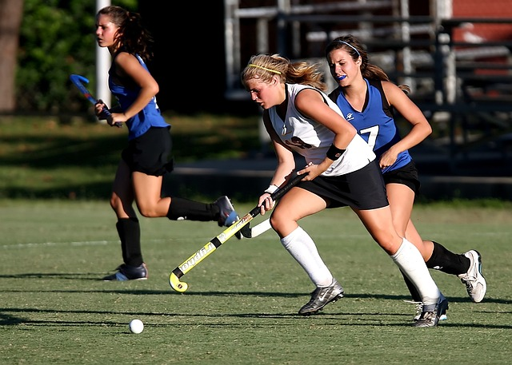

Hockey, India's national sport, is still attempting to reclaim its glory days when it took home gold medals from every Olympic Games. India dominated the hockey world with over eight Olympic gold medals, led by Dhyan Chand.The new rules, which included the installation of an artificial playing surface, proved to be a stumbling block for Indian players who were accustomed to playing on natural grass surfaces.
